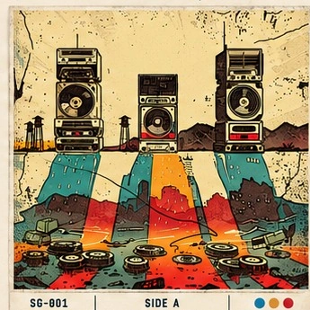

COUNTRYBOURBON WHISKEY
EXPLORE EXPRESSION ↗
COUNTRYBOURBON WHISKEY
EXPLORE EXPRESSION ↗
COUNTRY — BOURBON WHISKEY
Warmth. Character. Timeless appeal.
A Premium Web Experience
At SHISHA SAMPLE, we begin with standout, mature whiskeys, choosing barrels for depth, character, and potential. We compose distinctive blends with the care of a producer arranging a song: every component has a purpose, and the final expression matters most.
Then music becomes part of the craft itself. Our proprietary Musically Mastered™ process harnesses the physical energy of sound to influence how whiskey and oak interact. The pursuit goes beyond intensity: flavor development, aromatic complexity, and integration—all while preserving the character that makes each whiskey distinctive.
Country. Blues. Classic Rock. Jazz Fusion. Four individual voices, united by one philosophy: fanatically selected, expertly blended, Musically Mastered™.
COUNTRYBOURBON WHISKEY
EXPLORE EXPRESSION ↗
Warmth. Character. Timeless appeal.
 BLUESBOURBON WHISKEY
EXPLORE EXPRESSION ↗
BLUESBOURBON WHISKEY
EXPLORE EXPRESSION ↗
Soulful. Expressive. Full of character.

CLASSIC ROCKSTRAIGHT RYE WHISKEY EXPLORE EXPRESSION ↗Bold. Uncompromising. Full of attitude.
 JAZZ FUSIONAMERICAN SINGLE MALT WHISKEY
EXPLORE EXPRESSION ↗
JAZZ FUSIONAMERICAN SINGLE MALT WHISKEY
EXPLORE EXPRESSION ↗
Layered. Unexpected. Beautifully complex.
Design Demo by OCTETEC × MAKEZAA — Not an official venue website.